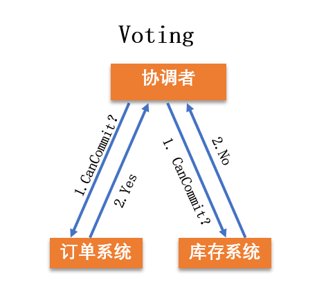
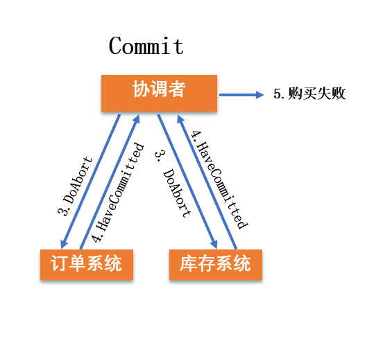
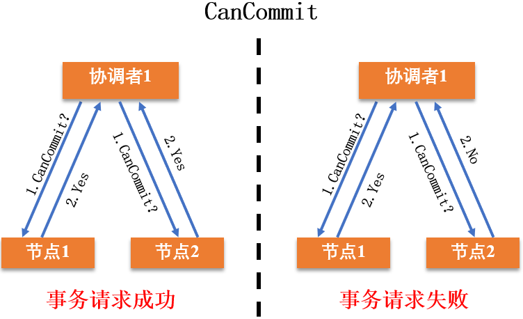
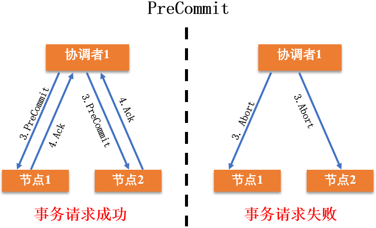
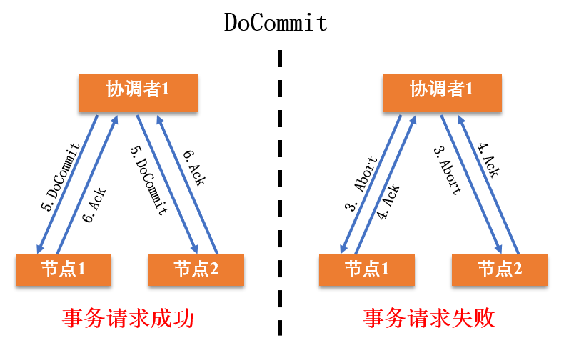
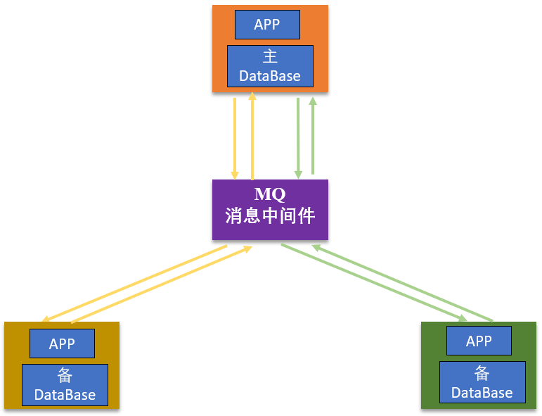
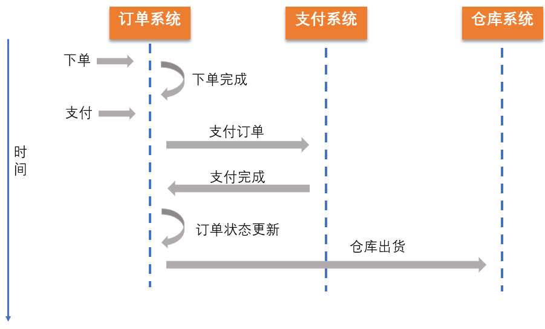
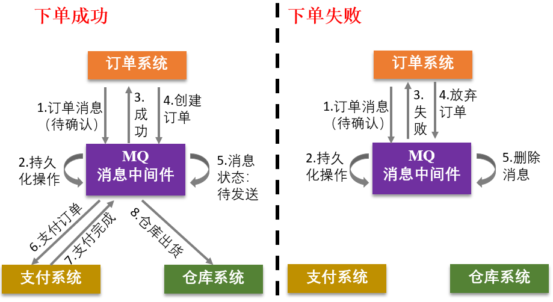
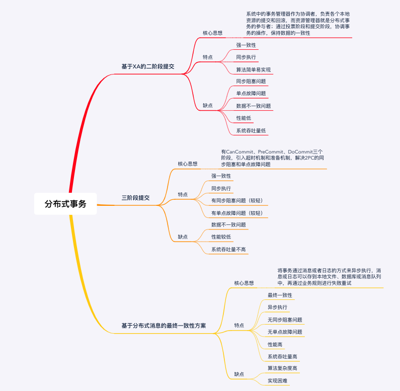

- 00 开篇词 四纵四横，带你透彻理解分布式技术.md.html
- 01 分布式缘何而起：从单兵，到游击队，到集团军.md.html
- 02 分布式系统的指标：啥是分布式的三围.md.html
- 03 分布式互斥：有你没我，有我没你.md.html
- 04 分布式选举：国不可一日无君.md.html
- 05 分布式共识：存异求同.md.html
- 06 分布式事务：All or nothing.md.html
- 07 分布式锁：关键重地，非请勿入.md.html
- 08 分布式技术是如何引爆人工智能的？.md.html
- 09 分布式体系结构之集中式结构：一人在上，万人在下.md.html
- 10 分布式体系结构之非集中式结构：众生平等.md.html
- 11 分布式调度架构之单体调度：物质文明、精神文明一手抓.md.html
- 12 分布式调度架构之两层调度：物质文明、精神文明两手抓.md.html
- 13 分布式调度架构之共享状态调度：物质文明、精神文明多手协商抓.md.html
- 14 答疑篇：分布式事务与分布式锁相关问题.md.html
- 15 分布式计算模式之MR：一门同流合污的艺术.md.html
- 16 分布式计算模式之Stream：一门背锅的艺术.md.html
- 17 分布式计算模式之Actor：一门甩锅的艺术.md.html
- 18 分布式计算模式之流水线：你方唱罢我登场.md.html
- 19 分布式通信之远程调用：我是你的千里眼.md.html
- 20 分布式通信之发布订阅：送货上门.md.html
- 21 分布式通信之消息队列：货物自取.md.html
- 22 答疑篇：分布式体系架构与分布式计算相关问题.md.html
- 23 CAP理论：这顶帽子我不想要.md.html
- 24 分布式数据存储系统之三要素：顾客、导购与货架.md.html
- 25 数据分布方式之哈希与一致性哈希：“掐指一算”与“掐指两算”的事.md.html
- 26 分布式数据复制技术：分身有术.md.html
- 27 分布式数据之缓存技术：“身手钥钱”随身带.md.html
- 28 分布式高可靠之负载均衡：不患寡，而患不均.md.html
- 29 分布式高可靠之流量控制：大禹治水，在疏不在堵.md.html
- 30 分布式高可用之故障隔离：当断不断，反受其乱.md.html
- 31 分布式高可用之故障恢复：知错能改，善莫大焉.md.html
- 32 答疑篇：如何判断并解决网络分区问题？.md.html
- 33 知识串联：以购买火车票的流程串联分布式核心技术.md.html
- 34 搭建一个分布式实验环境：纸上得来终觉浅，绝知此事要躬行.md.html
- 特别放送 Jackey：寄语天涯客，轻寒底用愁.md.html
- 特别放送 分布式下的一致性杂谈.md.html
- 特别放送 崔新：追根溯源，拨开云雾见青天.md.html
- 特别放送 徐志强：学习这件事儿，不到长城非好汉.md.html
- 特别放送 那些你不能错过的分布式系统论文.md.html
- 结束语 为什么说提升职业竞争力要从尊重、诚实开始？.md.html
- 捐赠
06 分布式事务：All or nothing
你好，我是聂鹏程。今天，我来继续带你打卡分布式核心技术。
对于网上购物的每一笔订单来说，电商平台一般都会有两个核心步骤：一是订单业务采取下订单操作，二是库存业务采取减库存操作。
通常，这两个业务会运行在不同的机器上，甚至是运行在不同区域的机器上。针对同一笔订单，当且仅当订单操作和减库存操作一致时，才能保证交易的正确性。也就是说一笔订单，只有这两个操作都完成，才能算做处理成功，否则处理失败，充分体现了“All or nothing”的思想。
在分布式领域中，这个问题就是分布式事务问题。那么今天，我们就一起打卡分布式事务吧。
什么是分布式事务？
在介绍分布式事务之前，我们首先来看一下什么是事务。
事务（Transaction）提供一种机制，将包含一系列操作的工作序列纳入到一个不可分割的执行单元。只有所有操作均被正确执行才能提交事务；任意一个操作失败都会导致整个事务回滚（Rollback）到之前状态，即所有操作均被取消。简单来说，事务提供了一种机制，使得工作要么全部都不做，要么完全被执行，即all or nothing。
通常情况下，我们所说的事务指的都是本地事务，也就是在单机上的事务。而事务具备四大基本特征ACID，具体含义如下。
- A：原子性（Atomicity），即事务最终的状态只有两种，全部执行成功和全部不执行，不会停留在中间某个环节。若处理事务的任何一项操作不成功，就会导致整个事务失败。一旦操作失败，所有操作都会被取消（即回滚），使得事务仿佛没有被执行过一样。就好比买一件商品，购买成功时，则给商家付了钱，商品到手；购买失败时，则商品在商家手中，消费者的钱也没花出去。
- C：一致性（Consistency），是指事务操作前和操作后，数据满足完整性约束，数据库保持一致性状态。比如，用户A和用户B在银行分别有800元和600元，总共1400元，用户A给用户B转账200元，分为两个步骤，从A的账户扣除200元和对B的账户增加200元。一致性就是要求上述步骤操作后，最后的结果是用户A还有600元，用户B有800元，总共1400元，而不会出现用户A扣除了200元，但用户B未增加的情况（该情况，用户A和B均为600元，总共1200元）。
- I：隔离性（Isolation），是指当系统内有多个事务并发执行时，多个事务同时使用相同的数据时，不会相互干扰，每个事务都有一个完整的数据空间，对其他并发事务是隔离的。也就是说，消费者购买商品这个事务，是不影响其他消费者购买的。
- D：持久性（Durability），也被称为永久性，是指一个事务被执行后，那么它对数据库所做的更新就永久地保存下来了。即使发生系统崩溃或宕机等故障，重新启动数据库系统后，只要数据库能够重新被访问，那么一定能够将其恢复到事务完成时的状态。就像消费者在网站上的购买记录，即使换了手机，也依然可以查到。
只有在数据操作请求满足上述四个特性的条件下，存储系统才能保证处于正确的工作状态。因此，无论是在传统的集中式存储系统还是在分布式存储系统中，任何数据操作请求都必须满足 ACID 特性。
分布式事务，就是在分布式系统中运行的事务，由多个本地事务组合而成。在分布式场景下，对事务的处理操作可能来自不同的机器，甚至是来自不同的操作系统。文章开头提到的电商处理订单问题，就是典型的分布式事务。
分布式事务由多个事务组成，因此基本满足ACID，其中的C是强一致性，也就是所有操作均执行成功，才提交最终结果，以保证数据一致性或完整性。但随着分布式系统规模不断扩大，复杂度急剧上升，达成强一致性所需时间周期较长，限定了复杂业务的处理。为了适应复杂业务，出现了BASE理论，该理论的一个关键点就是采用最终一致性代替强一致性。我会在“知识扩展”模块与你详细展开BASE理论这部分内容。
介绍完什么是事务和分布式事务，以及它们的基本特征后，就进入“怎么做”的阶段啦。所以接下来，我们就看看如何实现分布式事务吧。
如何实现分布式事务？
实际上，分布式事务主要是解决在分布式环境下，组合事务的一致性问题。实现分布式事务有以下3种基本方法：
- 基于XA协议的二阶段提交协议方法；
- 三阶段提交协议方法；
- 基于消息的最终一致性方法。
其中，基于XA协议的二阶段提交协议方法和三阶段提交协议方法，采用了强一致性，遵从ACID。基于消息的最终一致性方法，采用了最终一致性，遵从BASE理论。下面，我将带你一起学习这三种方法。
基于XA协议的二阶段提交方法
XA是一个分布式事务协议，规定了事务管理器和资源管理器接口。因此，XA协议包括事务管理器和本地资源管理器两个部分。
XA实现分布式事务的原理，就类似于我在第3讲中与你介绍的集中式算法：事务管理器相当于协调者，负责各个本地资源的提交和回滚；而资源管理器就是分布式事务的参与者，通常由数据库实现，比如Oracle、DB2等商业数据库都实现了XA接口。
基于 XA协议的二阶段提交方法中，二阶段提交协议（Two-phase Commit Protocol，2PC），用于保证分布式系统中事务提交时的数据一致性，是XA在全局事务中用于协调多个资源的机制。
那么，两阶段提交协议如何保证分布在不同节点上的分布式事务的一致性呢？为了保证它们的一致性，我们需要引入一个协调者来管理所有的节点，并确保这些节点正确提交操作结果，若提交失败则放弃事务。接下来，我们看看两阶段提交协议的具体过程。
两阶段提交协议的执行过程，分为投票（Voting）和提交（Commit）两个阶段。
首先，我们看一下第一阶段投票：在这一阶段，协调者（Coordinator，即事务管理器）会向事务的参与者（Cohort，即本地资源管理器）发起执行操作的CanCommit请求，并等待参与者的响应。参与者接收到请求后，会执行请求中的事务操作，将操作信息记录到事务日志中但不提交（即不会修改数据库中的数据），待参与者执行成功，则向协调者发送“Yes”消息，表示同意操作；若不成功，则发送“No”消息，表示终止操作。
当所有的参与者都返回了操作结果（Yes或No消息）后，系统进入了第二阶段提交阶段（也可以称为，执行阶段）。在提交阶段，协调者会根据所有参与者返回的信息向参与者发送DoCommit（提交）或DoAbort（取消）指令。具体规则如下：
- 若协调者从参与者那里收到的都是“Yes”消息，则向参与者发送“DoCommit”消息。参与者收到“DoCommit”消息后，完成剩余的操作（比如修改数据库中的数据）并释放资源（整个事务过程中占用的资源），然后向协调者返回“HaveCommitted”消息；
- 若协调者从参与者收到的消息中包含“No”消息，则向所有参与者发送“DoAbort”消息。此时投票阶段发送“Yes”消息的参与者，则会根据之前执行操作时的事务日志对操作进行回滚，就好像没有执行过请求操作一样，然后所有参与者会向协调者发送“HaveCommitted”消息；
- 协调者接收到来自所有参与者的“HaveCommitted”消息后，就意味着整个事务结束了。
接下来，我以用户A要在网上下单购买100件T恤为例，重点与你介绍下单操作和减库存操作这两个操作，帮助你加深对二阶段提交协议的理解。
第一阶段：订单系统中将与用户A有关的订单数据库锁住，准备好增加一条关于用户A购买100件T恤的信息，并将同意消息“Yes”回复给协调者。而库存系统由于T恤库存不足，出货失败，因此向协调者回复了一个终止消息“No”。

第二阶段：由于库存系统操作不成功，因此，协调者就会向订单系统和库存系统发送“DoAbort”消息。订单系统接收到“DoAbort”消息后，将系统内的数据退回到没有用户A购买100件T恤的版本，并释放锁住的数据库资源。订单系统和库存系统完成操作后，向协调者发送“HaveCommitted”消息，表示完成了事务的撤销操作。
至此，用户A购买100件T恤这一事务已经结束，用户A购买失败。

由上述流程可以看出，二阶段提交的算法思路可以概括为：协调者向参与者下发请求事务操作，参与者接收到请求后，进行相关操作并将操作结果通知协调者，协调者根据所有参与者的反馈结果决定各参与者是要提交操作还是撤销操作。
虽然基于XA的二阶段提交算法尽量保证了数据的强一致性，而且实现成本低，但依然有些不足。主要有以下三个问题：
- 同步阻塞问题：二阶段提交算法在执行过程中，所有参与节点都是事务阻塞型的。也就是说，当本地资源管理器占有临界资源时，其他资源管理器如果要访问同一临界资源，会处于阻塞状态。因此，基于XA的二阶段提交协议不支持高并发场景。
- 单点故障问题：该算法类似于集中式算法，一旦事务管理器发生故障，整个系统都处于停滞状态。尤其是在提交阶段，一旦事务管理器发生故障，资源管理器会由于等待管理器的消息，而一直锁定事务资源，导致整个系统被阻塞。
- 数据不一致问题：在提交阶段，当协调者向所有参与者发送“DoCommit”请求时，如果发生了局部网络异常，或者在发送提交请求的过程中协调者发生了故障，就会导致只有一部分参与者接收到了提交请求并执行提交操作，但其他未接到提交请求的那部分参与者则无法执行事务提交。于是整个分布式系统便出现了数据不一致的问题。
三阶段提交方法
三阶段提交协议（Three-phase Commit Protocol，3PC），是对二阶段提交（2PC）的改进。为了更好地处理两阶段提交的同步阻塞和数据不一致问题，三阶段提交引入了超时机制和准备阶段。
- 与2PC只是在协调者引入超时机制不同，3PC同时在协调者和参与者中引入了超时机制。如果协调者或参与者在规定的时间内没有接收到来自其他节点的响应，就会根据当前的状态选择提交或者终止整个事务，从而减少了整个集群的阻塞时间，在一定程度上减少或减弱了2PC中出现的同步阻塞问题。
- 在第一阶段和第二阶段中间引入了一个准备阶段，或者说把2PC的投票阶段一分为二，也就是在提交阶段之前，加入了一个预提交阶段。在预提交阶段尽可能排除一些不一致的情况，保证在最后提交之前各参与节点的状态是一致的。
三阶段提交协议就有CanCommit、PreCommit、DoCommit三个阶段，下面我们来看一下这个三个阶段。
第一，CanCommit阶段。
协调者向参与者发送请求操作（CanCommit请求），询问参与者是否可以执行事务提交操作，然后等待参与者的响应；参与者收到CanCommit请求之后，回复Yes，表示可以顺利执行事务；否则回复No。
3PC的CanCommit阶段与2PC的Voting阶段相比：
- 类似之处在于：协调者均需要向参与者发送请求操作（CanCommit请求），询问参与者是否可以执行事务提交操作，然后等待参与者的响应。参与者收到CanCommit请求之后，回复Yes，表示可以顺利执行事务；否则回复No。
- 不同之处在于，在2PC中，在投票阶段，若参与者可以执行事务，会将操作信息记录到事务日志中但不提交，并返回结果给协调者。但在3PC中，在CanCommit阶段，参与者仅会判断是否可以顺利执行事务，并返回结果。而操作信息记录到事务日志但不提交的操作由第二阶段预提交阶段执行。
CanCommit阶段不同节点之间的事务请求成功和失败的流程，如下所示。

当协调者接收到所有参与者回复的消息后，进入预提交阶段（PreCommit阶段）。
第二，PreCommit阶段。
协调者根据参与者的回复情况，来决定是否可以进行PreCommit操作（预提交阶段）。
如果所有参与者回复的都是“Yes”，那么协调者就会执行事务的预执行：
协调者向参与者发送PreCommit请求，进入预提交阶段。
参与者接收到PreCommit请求后执行事务操作，并将Undo和Redo信息记录到事务日志中。
如果参与者成功执行了事务操作，则返回ACK响应，同时开始等待最终指令。
假如任何一个参与者向协调者发送了“No”消息，或者等待超时之后，协调者都没有收到参与者的响应，就执行中断事务的操作：
协调者向所有参与者发送“Abort”消息。
参与者收到“Abort”消息之后，或超时后仍未收到协调者的消息，执行事务的中断操作。
预提交阶段，不同节点上事务执行成功和失败的流程，如下所示。

预提交阶段保证了在最后提交阶段（DoCmmit阶段）之前所有参与者的状态是一致的。
第三，DoCommit阶段。
DoCmmit阶段进行真正的事务提交，根据PreCommit阶段协调者发送的消息，进入执行提交阶段或事务中断阶段。
执行提交阶段：
若协调者接收到所有参与者发送的Ack响应，则向所有参与者发送DoCommit消息，开始执行阶段。
参与者接收到DoCommit消息之后，正式提交事务。完成事务提交之后，释放所有锁住的资源，并向协调者发送Ack响应。
协调者接收到所有参与者的Ack响应之后，完成事务。
事务中断阶段：
协调者向所有参与者发送Abort请求。
参与者接收到Abort消息之后，利用其在PreCommit阶段记录的Undo信息执行事务的回滚操作，释放所有锁住的资源，并向协调者发送Ack消息。
协调者接收到参与者反馈的Ack消息之后，执行事务的中断，并结束事务。
执行阶段不同节点上事务执行成功和失败(事务中断)的流程，如下所示。

3PC协议在协调者和参与者均引入了超时机制。即当参与者在预提交阶段向协调者发送 Ack消息后，如果长时间没有得到协调者的响应，在默认情况下，参与者会自动将超时的事务进行提交，从而减少整个集群的阻塞时间，在一定程度上减少或减弱了2PC中出现的同步阻塞问题。
但三阶段提交仍然存在数据不一致的情况，比如在PreCommit阶段，部分参与者已经接受到ACK消息进入执行阶段，但部分参与者与协调者网络不通，导致接收不到ACK消息，此时接收到ACK消息的参与者会执行任务，未接收到ACK消息且网络不通的参与者无法执行任务，最终导致数据不一致。
基于分布式消息的最终一致性方案
2PC和3PC核心思想均是以集中式的方式实现分布式事务，这两种方法都存在两个共同的缺点，一是，同步执行，性能差；二是，数据不一致问题。为了解决这两个问题，通过分布式消息来确保事务最终一致性的方案便出现了。
在eBay的分布式系统架构中，架构师解决一致性问题的核心思想就是：将需要分布式处理的事务通过消息或者日志的方式异步执行，消息或日志可以存到本地文件、数据库或消息队列中，再通过业务规则进行失败重试。这个案例，就是使用基于分布式消息的最终一致性方案解决了分布式事务的问题。
基于分布式消息的最终一致性方案的事务处理，引入了一个消息中间件（在本案例中，我们采用Message Queue，MQ，消息队列），用于在多个应用之间进行消息传递。实际使用中，阿里就是采用RocketMQ 机制来支持消息事务。
基于消息中间件协商多个节点分布式事务执行操作的示意图，如下所示。

仍然以网上购物为例。假设用户A在某电商平台下了一个订单，需要支付50元，发现自己的账户余额共150元，就使用余额支付，支付成功之后，订单状态修改为支付成功，然后通知仓库发货。
在该事件中，涉及到了订单系统、支付系统、仓库系统，这三个系统是相互独立的应用，通过远程服务进行调用。

根据基于分布式消息的最终一致性方案，用户A通过终端手机首先在订单系统上操作，通过消息队列完成整个购物流程。然后整个购物的流程如下所示。

- 订单系统把订单消息发给消息中间件，消息状态标记为“待确认”。
- 消息中间件收到消息后，进行消息持久化操作，即在消息存储系统中新增一条状态为“待发送”的消息。
- 消息中间件返回消息持久化结果（成功/失败），订单系统根据返回结果判断如何进行业务操作。失败，放弃订单，结束（必要时向上层返回失败结果）；成功，则创建订单。
- 订单操作完成后，把操作结果（成功/失败）发送给消息中间件。
- 消息中间件收到业务操作结果后，根据结果进行处理：失败，删除消息存储中的消息，结束；成功，则更新消息存储中的消息状态为“待发送（可发送）”，并执行消息投递。
- 如果消息状态为“可发送”，则MQ会将消息发送给支付系统，表示已经创建好订单，需要对订单进行支付。支付系统也按照上述方式进行订单支付操作。
- 订单系统支付完成后，会将支付消息返回给消息中间件，中间件将消息传送给订单系统。若支付失败，则订单操作失败，订单系统回滚到上一个状态，MQ中相关消息将被删除；若支付成功，则订单系统再调用库存系统，进行出货操作，操作流程与支付系统类似。
在上述过程中，可能会产生如下异常情况，其对应的解决方案为：
- 订单消息未成功存储到MQ中，则订单系统不执行任何操作，数据保持一致；
- MQ成功将消息发送给支付系统（或仓库系统），但是支付系统（或仓库系统）操作成功的ACK消息回传失败（由于通信方面的原因），导致订单系统与支付系统（或仓库系统）数据不一致，此时MQ会确认各系统的操作结果，删除相关消息，支付系统（或仓库系统）操作回滚，使得各系统数据保持一致；
- MQ成功将消息发送给支付系统（或仓库系统），但是支付系统（或仓库系统）操作成功的ACK消息回传成功，订单系统操作后的最终结果（成功或失败）未能成功发送给MQ，此时各系统数据可能不一致，MQ也需确认各系统的操作结果，若数据一致，则更新消息；若不一致，则回滚操作、删除消息。
基于分布式消息的最终一致性方案采用消息传递机制，并使用异步通信的方式，避免了通信阻塞，从而增加系统的吞吐量。同时，这种方案还可以屏蔽不同系统的协议规范，使其可以直接交互。
在不需要请求立即返回结果的场景下， 这些特性就带来了明显的通信优势，并且通过引入消息中间件，实现了消息生成方（如上述的订单系统）本地事务和消息发送的原子性，采用最终一致性的方式，只需保证数据最终一致即可，一定程度上解决了二阶段和三阶段方法要保证强一致性而在某些情况导致的数据不一致问题。
可以看出，分布式事务中，当且仅当所有的事务均成功时整个流程才成功。所以，分布式事务的一致性是实现分布式事务的关键问题，目前来看还没有一种很简单、完美的方案可以应对所有场景。
三种实现方式对比
现在，为了方便你理解并记忆这三种方法，我总结了一张表格，从算法一致性、执行方式、性能等角度进行了对比：

知识扩展：刚性事务与柔性事务
在讨论事务的时候，我们经常会提到刚性事务与柔性事务，但却很难区分这两种事务。所以，今天的知识扩展内容，我就来和你说说什么是刚性事务、柔性事务，以及两者之间有何区别？
- 刚性事务，遵循ACID原则，具有强一致性。比如，数据库事务。
- 柔性事务，其实就是根据不同的业务场景使用不同的方法实现最终一致性，也就是说我们可以根据业务的特性做部分取舍，容忍一定时间内的数据不一致。
总结来讲，与刚性事务不同，柔性事务允许一定时间内，数据不一致，但要求最终一致。而柔性事务的最终一致性，遵循的是BASE理论。
那，什么是BASE理论呢？
eBay 公司的工程师 Dan Pritchett曾提出了一种分布式存储系统的设计模式——BASE理论。 BASE理论包括基本可用（Basically Available）、柔性状态（Soft State）和最终一致性（Eventual Consistency）。
- 基本可用：分布式系统出现故障的时候，允许损失一部分功能的可用性，保证核心功能可用。比如，某些电商618大促的时候，会对一些非核心链路的功能进行降级处理。
- 柔性状态：在柔性事务中，允许系统存在中间状态，且这个中间状态不会影响系统整体可用性。比如，数据库读写分离，写库同步到读库（主库同步到从库）会有一个延时，其实就是一种柔性状态。
- 最终一致性：事务在操作过程中可能会由于同步延迟等问题导致不一致，但最终状态下，所有数据都是一致的。
BASE理论为了支持大型分布式系统，通过牺牲强一致性，保证最终一致性，来获得高可用性，是对ACID原则的弱化。ACID 与 BASE 是对一致性和可用性的权衡所产生的不同结果，但二者都保证了数据的持久性。ACID 选择了强一致性而放弃了系统的可用性。与ACID原则不同的是，BASE理论保证了系统的可用性，允许数据在一段时间内可以不一致，最终达到一致状态即可，也即牺牲了部分的数据一致性，选择了最终一致性。
具体到今天的三种分布式事务实现方式，二阶段提交、三阶段提交方法，遵循的是ACID原则，而消息最终一致性方案遵循的就是BASE理论。
总结
我从事务的ACID特性出发，介绍了分布式事务的概念、特征，以及如何实现分布式事务。在关于如何实现分布式的部分，我以网购为例，与你介绍了常见的三种实现方式，即基于XA协议的二阶段提交方法，三阶段方法以及基于分布式消息的最终一致性方法。
二阶段和三阶段方法是维护强一致性的算法，它们针对刚性事务，实现的是事务的ACID特性。而基于分布式消息的最终一致性方案更适用于大规模分布式系统，它维护的是事务的最终一致性，遵循的是BASE理论，因此适用于柔性事务。
在分布式系统的设计与实现中，分布式事务是不可或缺的一部分。可以说，没有实现分布式事务的分布式系统，不是一个完整的分布式系统。分布式事务的实现过程看似复杂，但将方法分解剖析后，你就会发现分布式事务的实现是有章可循的。
我将实现分布式事务常用的三个算法整理为了一张思维导图，以帮助你加深理解与记忆。

思考题
你觉得分布式互斥与分布式事务之间的关系是什么呢？
我是聂鹏程，感谢你的收听，欢迎你在评论区给我留言分享你的观点，也欢迎你把这篇文章分享给更多的朋友一起阅读。我们下期再会！
© 2019 - 2023 Liangliang Lee. Powered by gin and hexo-theme-book.